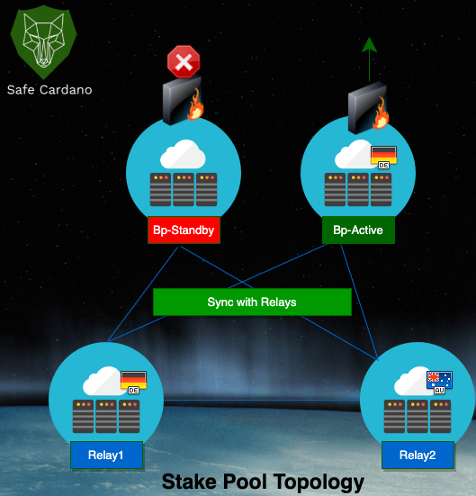

About Us
Safe Cardano is ran by IT professionals with over two decades of experience in designing and implementing enterprise solutions for a range of organisations. We are experts in building and operating safe, high available and reliable distributed Linux Systems.
We are also experienced stake pool operators, operating stake pool services since December 2019, from the very start of the Cardano Incentivised Testnet (ITN).
There are many lessons we have learnt throughout the ITN journey, these learnings have now shaped our current stake pool solution to ensure we continue to provide the best possible safe and most reliable service back to our delegators.
Our Stake Pool
- Ticker: SAFE
- Stake Pool ID: 27c58abdd30fd5a88d25144937482ce79419dc6afd770e91a0f750e3
- Margin: 1.99%
- Fixed Cost: 340 ada (minimum required)
Cardano-Nodes
- Block-Producer : bp-de-vps (with standby node), location: Frankfurt, Germany
- Relay: relay1-de-vps, location: Frankfurt, Germany
- Relay: relay2-au-vps, location: Sydney, Australia

At Safe Cardano we focus on providing a secure, highly resilient and reliable infrastructure solution to ensure our stake pool is always on and continuously running in order to maximise your return potential.
Our stake pool architecture comprises of four stake 2 relays located globally; this ensures we are well connected to the global Cardano network and provides ample redundancy.
Our relays connect our block-producing node to the Cardano network, with the block-producing node having a warm standby node running in parallel to ensure quick recovery in the event of any issues and facilitates more seamless maintenance when required.
Our Missions
We exist to ensure the positive advancement of the Cardano protocol, while also contributing to the positive advancement of blockchain as a world-changing technology.
We support the Cardano ecosystem because we share in their vision and believe this technology has a real chance to revolutionize the world and we believe we are only at the precipice of this change.